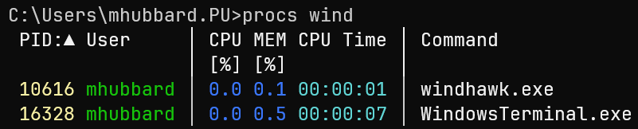

PowerShell Win/Mac/Linux
Here are the steps I took to get Windows terminal installed, the latest version of PowerShell configured with history and some other Linux like features. Also the procs tool for viewing processes in a Unix like format.
Getting Started
The first step is installing the Windows Terminal. While not strictly required, you could use the cmd.exe shell, I find the Windows Terminal a much better solution. It allows:
Multiple applications in one application
- PowerShell
- WSL
- Git Bash
- CMD.exe
- Azure Cloud Shell
Here is a screenshot of my Windows Terminal menu:
You can see that I have organized it so that Ubuntu 24.04 is at the top, then PowerShell 7, then Git Bash, then Command Prompt. The PowerShell without a number is the builtin version 5.1. Since I use WSL and PowerShell 7.5 the most, this makes sense for me. After we install PowerShell 7.5, I'll show you how to modify the order.
This article: Windows Terminal vs. Command Prompt vs. PowerShell: Which Should You Use? covers the differences between cmd.exe, powershell, wsl, and Windows Terminal. To sum up:
Windows Terminal is the newest member of the group. Rather than being a shell itself, it serves as a modern interface for hosting multiple shells. You can run CMD, PowerShell, and even Linux distributions through Windows Subsystem for Linux (WSL) all within a single, customizable window. With features like tabs, Unicode support, and GPU-accelerated rendering, it makes multitasking smoother and more efficient.
Install Windows Terminal
Installing the Windows Terminal is simple.
- Click the start menu
- Type
microsoft storeand pressenter - Search for
Windows Terminal - Click on the
Freebutton - click on
Get

Install the latest version of PowerShell core
Windows 11 ships with PowerShell 5.1 installed. I don't understand all the reasons behind it, but PowerShell 7.5 is the latest version and it installs BESIDE PowerShell 5.1. That is really confusing and both versions store their $PROFILE in separate locations!
Open cmd.exe and paste the following code:
winget install --id Microsoft.PowerShell --source winget
This will install the latest version of PowerShell 7. If PowerShell 7 is already installed, it will fail and tell you to run upgrade instead.
In that case, run the following code to verify that PowerShell is up to date:
winget upgrade --id Microsoft.PowerShell --source winget
Check the Powershell version
Search terminal in Windows search bar and open it. Click the in the top menu and select PowerShell. Once you are in the PowerShell terminal you can check the version with $PSVersionTable. Here is what the output looked like on my fresh install:
(Discovery) PS C:\Users\mhubbard.PU\Documents\04_tools\Discovery> $PSVersionTable
Name Value
---- -----
PSVersion 7.5.1
PSEdition Core
GitCommitId 7.5.1
OS Microsoft Windows 10.0.26100
Platform Win32NT
PSCompatibleVersions {1.0, 2.0, 3.0, 4.0…}
PSRemotingProtocolVersion 2.3
SerializationVersion 1.1.0.1
WSManStackVersion 3.0
Add a persistent history and command search
This is a must have feature and gives PowerShell some zsh like capabilities.
Create the PowerShell 7 profile
For some reason installing PowerShell 7 with winget didn't create the profile. We will use this PowerShell code to do it. Click on the copy icon on the right to copy the code and paste it into the PowerShell terminal:
You can see the path to the file by running:
Tip
You can view all profiles that PowerShell 7 sees using
$PROFILE | Select-Object *
AllUsersAllHosts : C:\Program Files\PowerShell\7\profile.ps1
AllUsersCurrentHost : C:\Program Files\PowerShell\7\Microsoft.PowerShell_profile.ps1
CurrentUserAllHosts : C:\Users\mhubbard.PU\OneDrive\Documents\PowerShell\profile.ps1
CurrentUserCurrentHost : C:\Users\mhubbard.PU\OneDrive\Documents\PowerShell\Microsoft.PowerShell_profile.ps1
Length : 83
We want to modify the profile. Open it using notepad $PROFILE. Then paste in the following:
The first line imports the PSReadLine module. This tells PowerShell to read the history file.
The next 4 lines setup a history search capability. That is so useful, if you have typed a command previously, you just type the first few letters and tap the up arrow. It will cycle through all commands that match.
The function Invoke-CsvLensWithArgs creates an alias for csvlens that automatically adds the --color-columns and --no-headers needed to view the device inventory files.
Note
If you installed PowerShell On Mac/Linux, use csvlens --color-columns --no-headers @args instead of csvlens.exe --color-columns --no-headers @args
The line Set-Alias -Name cl -Value Invoke-CsvLensWithArgs, builds the alias. In this case, typing cl invokes the alias.
Finally, the line Invoke-Expression (& { (zoxide init powershell | Out-String) }) adds zoxide to the profile. Zoxide is a tool that builds a database of the directories you go to then allows you to jump to them with just a few keystrokes.
For example, once you have installed the scripts to the Discovery folder and navigated to them at least once you can just type z dis and it will jump you to the directory.
Load the history file
PowerShell's persistent history is primarily managed by the PSReadLine module. This module tracks the commands you enter and saves them to a history file.
You can enter (Get-PSReadlineOption).HistorySavePath to find the location of the history file.
Windows
For me, the file is located at C:\Users\mhubbard.PU\AppData\Roaming\Microsoft\Windows\PowerShell\PSReadLine\ConsoleHost_history.txt.
Linux
For me, the file is located at /home/mhubbard/.local/share/powershell/PSReadLine/ConsoleHost_history.txt.
When I closed PowerShell I lost the history. I did a bunch of Gemini searching and found you have to add some code to the $profile to make PowerShell display history from the previous session.
You can display history using:
cat (Get-PSReadlineOption).HistorySavePath
and search history using:
cat (Get-PSReadlineOption).HistorySavePath | Select-String <Something>
If you have been using a loaner laptop, you can delete the entire history file using:
Remove-Item (Get-PSReadlineOption).HistorySavePath
Change how PowerShell command history is saved:
Set-PSReadlineOption -HistorySaveStyle SaveIncrementally # default
Set-PSReadlineOption -HistorySaveStyle SaveAtExit
Set-PSReadlineOption -HistorySaveStyle SaveNothing
To make history persist across sessions open the $profile and paste this into the bottom of the file.
Close PowerShell and reopen it. type h to see history from all sessions. The and keys will navigate through the history.
There is also an alias rh history number that will run the command given by the history number.
The code also adds line numbers like in the Mac/Linux history.
example
Now rerun the echo $profile alias
I ran this on Ubuntu, but it works on Windows and Mac the same way!

Install Zoxide
Zoxide works on Mac/Linux/Windows! The project is hosted on GitHub at zoxide. To install on Windows:
The winget command does the install, the zoxide init powershell adds the line we saw above to the PowerShell profile. I cannot recommend zoxide enough.
Install procs
Procs is a modern replacement for venerable Linux/Unix ps command written in rust. It's cross platform and available for Mac/Linux and Windows.
From a cmd.exe shell, run:
winget install procs
You will need to close the terminal and reopen to use procs
Features
- Colored and human-readable output
- Automatic theme detection based on terminal background
- Multi-column keyword search
- Some additional information which are not supported by ps
- TCP/UDP port
- Read/Write throughput
- Docker container name
- More memory information
- Pager support
- Watch mode (like top)
- Tree view
While not required, it's a nice tool and if you work on more than one OS it is nice to have common tools. Here is a screenshot of procs with no arguments:
Search by non-numeric keyword
If you include a nonnumeric keyword, only processes matching the keyword will be shown. For example, to find processes starting with wind:
procs wind

Display dependencies in a tree view
procs --tree

There are many more options for sorting, adding columns, viewing Docker containers, etc. Please visit the Procs GitHub repo for full details.
Change the order in Terminal
This is optional but if you use Windows Terminal often it's worth customizing the order that your shells are displayed in.
- Open Windows Terminal
- Click the in the top menu
- Click
settings - Click
Open JSON Fileat the very bottom, left of the terminal.
Note
On my Windows laptop, Windows Terminal always opens with the bottom of the terminal below the bottom of the screen. I couldn't see the Open JSON file option until dragging the window up. Holding shift while clicking the X to close hasn't resolved the issue.
Scroll down until you see
"list":
[
{
"commandline": "%SystemRoot%\\System32\\WindowsPowerShell\\v1.0\\powershell.exe",
"guid": "{61c54bbd-c2c6-5271-96e7-009a87ff44bf}",
"hidden": true,
"name": "Windows PowerShell 7"
},
Your exact JSON will be different than mine so you will see something different. The important thing is finding ":list": in the JSON file. Copy everything from "list": to the last } before the ] symbol and save it to notepad++ or your favorite editor. Save a copy as a backup in case you make a mistake editing settings.json.
Move the shells
Now you can cut each shell and move it to the order you want. I renamed Windows PowerShell to Windows PowerShell 7 so that it's obvious which version to select. When you are satisfied, save and close the settings.json file.
Notice the "hidden": true, and "hidden": false, lines. I don't know why some shells have two entries with one hidden and one not.
Here is what my final JSON looks like: